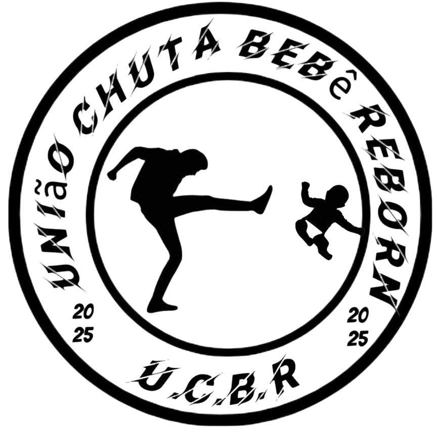

A U.C.B.R (União Chuta Bebê Reborn) surgiu como um fenômeno humorístico nas redes sociais em maio de 2025, com o objetivo satírico de "chutar" (zombar ou desafiar) pessoas que exibem bebês reborn — bonecos hiper-realistas que imitam bebês humanos.
O termo viralizou através de vídeos, músicas e memes no TikTok, Instagram e X (antigo Twitter), com edições rápidas e slogans como "proibido reborn no evento!".
E foi assim que surgiu nossa música!
Clique aqui para Ver
É um meme de internet que satiriza colecionadores de reborn de forma irreverente — sem violência real. As expressões como "chutar" ou "assassinar" bonecos são simbólicas e fazem parte da zoeira.